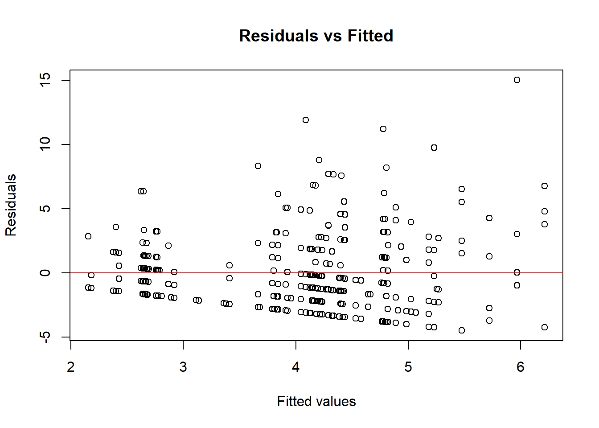

seq_data <- read.csv("sequences.csv")camera
Analysis info
Looking at differences in observed white-tailed deer exhibiting feeding behaviors between plots with variable treatments (0:control or 1:tannins) over time. We included WAT (Week after application) as an additional predictor variable and Plot and Field as nested random effects.
Response Variable:
- Group Size (daily sums of individuals per plot)
Predictor Variables:
- Treatment (0: Control, 1: Tannins)
- WAT (Week After Application: 1-4)
- Plot (1-20)
- Field (1-20)
Below is our process of fitting our data to the best possible model.
Camera Data Analysis
Reading in Data
Applying transformations and formatting data
# Transform start_time to year-month-day
seq_data <- seq_data |>
mutate(start_time = as.Date(start_time))
# subsetting to only show only post treatment dates >= 2024-06-21
seq_data <- seq_data |>
filter(identified_by == 'Ethan Marburger',
start_time >= "2024-06-22" & start_time <= "2024-08-02",
common_name == "White-tailed Deer")
seq_data <- seq_data |>
mutate(treatment = case_when(
grepl("^WTD_2|^WTD_4|^WTD_5|^WTD_7|^WTD_8|^WTD_10|^WTD_14|^WTD_15|^WTD_17|^WTD_18", deployment_id) ~ 1,
grepl("^WTD_1|^WTD_3|^WTD_6|^WTD_9|^WTD_11|^WTD_12|^WTD_13|^WTD_16|^WTD_19|^WTD_20", deployment_id) ~ 0,
TRUE ~ NA_real_)) |>
mutate(WAT = case_when(
start_time >= "2024-06-22" & start_time <= "2024-06-28" ~ 1,
start_time >= "2024-06-29" & start_time <= "2024-07-05" ~ 2,
start_time >= "2024-07-06" & start_time <= "2024-07-12" ~ 3,
start_time >= "2024-07-13" & start_time <= "2024-07-19" ~ 4,
start_time >= "2024-07-20" & start_time <= "2024-07-26" ~ 5,
start_time >= "2024-07-27" & start_time <= "2024-08-02" ~ 6,
TRUE ~ NA_real_)) |>
mutate(field = case_when(
grepl("^WTD_1|^WTD_2|^WTD_3|^WTD_4|^WTD_5|^WTD_6", deployment_id) ~ 1,
grepl("^WTD_7|^WTD_8|^WTD_9|^WTD_20", deployment_id) ~ 2,
grepl("^WTD_10|^WTD_11|^WTD_12|^WTD_13|^WTD_14|^WTD_15|^WTD_16|^WTD_17|^WTD_18|^WTD_19", deployment_id) ~ 3,
TRUE ~ NA_real_)) |>
mutate(plot = case_when(
grepl("^WTD_1_", deployment_id) ~ 1,
grepl("^WTD_2_", deployment_id) ~ 2,
grepl("^WTD_3_", deployment_id) ~ 3,
grepl("^WTD_4_", deployment_id) ~ 4,
grepl("^WTD_5_", deployment_id) ~ 5,
grepl("^WTD_6_", deployment_id) ~ 6,
grepl("^WTD_7_", deployment_id) ~ 7,
grepl("^WTD_8_", deployment_id) ~ 8,
grepl("^WTD_9_", deployment_id) ~ 9,
grepl("^WTD_10_", deployment_id) ~ 10,
grepl("^WTD_11_", deployment_id) ~ 11,
grepl("^WTD_12_", deployment_id) ~ 12,
grepl("^WTD_13_", deployment_id) ~ 13,
grepl("^WTD_14_", deployment_id) ~ 14,
grepl("^WTD_15_", deployment_id) ~ 15,
grepl("^WTD_16_", deployment_id) ~ 16,
grepl("^WTD_17_", deployment_id) ~ 17,
grepl("^WTD_18_", deployment_id) ~ 18,
grepl("^WTD_19_", deployment_id) ~ 19,
grepl("^WTD_20_", deployment_id) ~ 20,
TRUE ~ NA_real_))
# Creating a new tibble
data <- seq_data |>
select(deployment_id, treatment, Date = start_time, WAT, field, plot, group_size) |>
group_by(WAT)
head(data)# A tibble: 6 × 7
# Groups: WAT [1]
deployment_id treatment Date WAT field plot group_size
<chr> <dbl> <date> <dbl> <dbl> <dbl> <int>
1 WTD_1_061324_062424 0 2024-06-22 1 1 1 2
2 WTD_1_061324_062424 0 2024-06-22 1 1 1 2
3 WTD_2_061324_062424 1 2024-06-22 1 1 2 1
4 WTD_2_061324_062424 1 2024-06-22 1 1 2 1
5 WTD_4_061324_062424 1 2024-06-23 1 1 4 1
6 WTD_6_061324_062424 0 2024-06-22 1 1 6 1Daily sums of group_size values.
# getting to daily sums of individuals per plot
data_daily <- aggregate(group_size ~ Date + plot, data = data, sum, na.rm = TRUE)
# Creating treatment variable
data_daily$treatment <- ifelse(data_daily$plot %in% c(1, 3, 6, 9, 11, 12, 13, 16, 19, 20), 0,
ifelse(data_daily$plot %in% c(2, 4, 5, 7, 8, 10, 14, 15, 17, 18), 1,
NA))
# Creating a Field variable
data_daily$field <- ifelse(data_daily$plot %in% c(1, 2, 3, 4, 5, 6), 1,
ifelse(data_daily$plot %in% c(7, 8, 9, 20), 2,
3))
# Creating a WAT variable
data_daily <- data_daily |>
mutate(WAT = case_when(
Date >= "2024-06-22" & Date <= "2024-06-28" ~ 1,
Date >= "2024-06-29" & Date <= "2024-07-05" ~ 2,
Date >= "2024-07-06" & Date <= "2024-07-12" ~ 3,
Date >= "2024-07-13" & Date <= "2024-07-19" ~ 4,
Date >= "2024-07-20" & Date <= "2024-07-26" ~ 5,
Date >= "2024-07-27" & Date <= "2024-08-02" ~ 6,
TRUE ~ NA_real_))
head(data_daily) Date plot group_size treatment field WAT
1 2024-06-22 1 4 0 1 1
2 2024-06-26 1 3 0 1 1
3 2024-06-27 1 1 0 1 1
4 2024-06-28 1 6 0 1 1
5 2024-06-29 1 3 0 1 2
6 2024-06-30 1 6 0 1 2Simple Analysis
#Converting Field, Plot, and Treatment variables to factors
data_daily <- data_daily |>
mutate(Field = as.factor(field),
Plot = as.factor(plot),
Treatment = as.factor(treatment)) |>
select(-field, -plot, -treatment) # Dropping unneeded variablesSimple Linear Regression
# Linear Regression
# Null Model
lm_count_1 <- lm(formula = group_size ~ Treatment, data = data_daily)
# Partial Model
lm_count_2 <- lm(formula = group_size ~ Treatment * WAT, data = data_daily)
# Full Model
lm_count_3 <- lm(formula = group_size ~ Treatment * WAT * Field, data = data_daily)Choosing the best model
#ANOVA for differences in models
anova(lm_count_1, lm_count_2, lm_count_3)Analysis of Variance Table
Model 1: group_size ~ Treatment
Model 2: group_size ~ Treatment * WAT
Model 3: group_size ~ Treatment * WAT * Field
Res.Df RSS Df Sum of Sq F Pr(>F)
1 355 4690.0
2 353 4573.0 2 116.97 4.9106 0.007891 **
3 345 4108.8 8 464.21 4.8722 1.037e-05 ***
---
Signif. codes: 0 '***' 0.001 '**' 0.01 '*' 0.05 '.' 0.1 ' ' 1# AIC to pick the best model
AIC(lm_count_1, lm_count_2, lm_count_3) df AIC
lm_count_1 3 1938.558
lm_count_2 5 1933.542
lm_count_3 13 1911.328Model Summary
summary(lm_count_3)
Call:
lm(formula = group_size ~ Treatment * WAT * Field, data = data_daily)
Residuals:
Min 1Q Median 3Q Max
-6.5814 -2.0956 -0.6827 1.5383 18.6473
Coefficients:
Estimate Std. Error t value Pr(>|t|)
(Intercept) 3.4678 0.9642 3.596 0.00037 ***
Treatment1 -0.6337 1.4373 -0.441 0.65955
WAT -0.2901 0.3132 -0.926 0.35490
Field2 -0.1082 1.4647 -0.074 0.94118
Field3 0.8069 1.3589 0.594 0.55304
Treatment1:WAT 0.1388 0.4516 0.307 0.75880
Treatment1:Field2 1.3455 2.0431 0.659 0.51060
Treatment1:Field3 -0.5169 1.9354 -0.267 0.78959
WAT:Field2 0.4513 0.4237 1.065 0.28750
WAT:Field3 0.3524 0.3878 0.909 0.36414
Treatment1:WAT:Field2 -0.1510 0.5929 -0.255 0.79909
Treatment1:WAT:Field3 0.5418 0.5540 0.978 0.32877
---
Signif. codes: 0 '***' 0.001 '**' 0.01 '*' 0.05 '.' 0.1 ' ' 1
Residual standard error: 3.451 on 345 degrees of freedom
Multiple R-squared: 0.1312, Adjusted R-squared: 0.1035
F-statistic: 4.736 on 11 and 345 DF, p-value: 8.935e-07No statistical significance but a negative influence of Treatment on group size.
Checking Model Assumptions
Using a QQ plot to look for non-normal distributions of the model’s plotted residuals
plot(lm_count_3)Observed outliers: 190, 207, 212. May remove outliers later.
Q-Q Plot isn’t the worst.
A mixed effects model that allows us to treat Field and Plot as random variables may better match the study design.
Mixed Effects Models
Fitting models
# Mixed-Effects Model for Percent Damage
# Null Model
mem_1 <- glmmTMB(group_size ~ Treatment, data = data_daily)
# Partial Model 1
mem_2 <- glmmTMB(group_size ~ Treatment * WAT, data = data_daily)
# Partial Model 2
mem_3 <- glmmTMB(group_size ~ Treatment * WAT * Field, data = data_daily)
# Full Model with random effects for Field
mem_4 <- glmmTMB(group_size ~ Treatment * WAT + (1 | Field), data = data_daily)
# Full Model with random effects for Field/Plot
mem_5 <- glmmTMB(group_size ~ Treatment * WAT + (1 | Plot) + (1 | Field), data = data_daily)Choosing the best model
#ANOVA for differences in models
anova(mem_1, mem_2, mem_3,mem_4, mem_5)Data: data_daily
Models:
mem_1: group_size ~ Treatment, zi=~0, disp=~1
mem_2: group_size ~ Treatment * WAT, zi=~0, disp=~1
mem_4: group_size ~ Treatment * WAT + (1 | Field), zi=~0, disp=~1
mem_5: group_size ~ Treatment * WAT + (1 | Plot) + (1 | Field), zi=~0, disp=~1
mem_3: group_size ~ Treatment * WAT * Field, zi=~0, disp=~1
Df AIC BIC logLik deviance Chisq Chi Df Pr(>Chisq)
mem_1 3 1938.6 1950.2 -966.28 1932.6
mem_2 5 1933.5 1952.9 -961.77 1923.5 9.0164 2 0.011018 *
mem_4 6 1916.8 1940.1 -952.41 1904.8 18.7199 1 1.514e-05 ***
mem_5 7 1908.5 1935.6 -947.25 1894.5 10.3235 1 0.001313 **
mem_3 13 1911.3 1961.7 -942.66 1885.3 9.1698 6 0.164253
---
Signif. codes: 0 '***' 0.001 '**' 0.01 '*' 0.05 '.' 0.1 ' ' 1# AIC to pick the best model
AIC(mem_1, mem_2, mem_3,mem_4, mem_5) df AIC
mem_1 3 1938.558
mem_2 5 1933.542
mem_3 13 1911.328
mem_4 6 1916.822
mem_5 7 1908.498Model Summary
summary(mem_5) Family: gaussian ( identity )
Formula: group_size ~ Treatment * WAT + (1 | Plot) + (1 | Field)
Data: data_daily
AIC BIC logLik deviance df.resid
1908.5 1935.6 -947.2 1894.5 350
Random effects:
Conditional model:
Groups Name Variance Std.Dev.
Plot (Intercept) 0.7757 0.8807
Field (Intercept) 0.6063 0.7787
Residual 11.1900 3.3451
Number of obs: 357, groups: Plot, 20; Field, 3
Dispersion estimate for gaussian family (sigma^2): 11.2
Conditional model:
Estimate Std. Error z value Pr(>|z|)
(Intercept) 3.64472 0.77970 4.674 2.95e-06 ***
Treatment1 -0.74136 0.88387 -0.839 0.4016
WAT 0.01287 0.15048 0.086 0.9319
Treatment1:WAT 0.34842 0.20949 1.663 0.0963 .
---
Signif. codes: 0 '***' 0.001 '**' 0.01 '*' 0.05 '.' 0.1 ' ' 1Model Diagnostics
# Extract residuals
residuals_1 <- resid(mem_5)
fitted_1 <- fitted(mem_5)
# Plot residuals vs fitted values
plot(fitted_1, residuals_1, xlab = "Fitted values", ylab = "Residuals",
main = "Residuals vs Fitted")
abline(h = 0, col = "red")qqnorm(residuals_1)
qqline(residuals_1, col = "red")
Removing outliers and refitting best model
data_outlier <- data_daily[-c(190, 207, 212), ]# Model using data set without outliers
mem_6 <- glmmTMB(group_size ~ Treatment * WAT + (1 | Plot) + (1 | Field), data = data_outlier)Model Summary
summary(mem_6) Family: gaussian ( identity )
Formula: group_size ~ Treatment * WAT + (1 | Plot) + (1 | Field)
Data: data_outlier
AIC BIC logLik deviance df.resid
1813.6 1840.7 -899.8 1799.6 347
Random effects:
Conditional model:
Groups Name Variance Std.Dev.
Plot (Intercept) 0.2724 0.5219
Field (Intercept) 0.6355 0.7972
Residual 9.0911 3.0151
Number of obs: 354, groups: Plot, 20; Field, 3
Dispersion estimate for gaussian family (sigma^2): 9.09
Conditional model:
Estimate Std. Error z value Pr(>|z|)
(Intercept) 3.67616 0.70658 5.203 1.96e-07 ***
Treatment1 -0.53228 0.74245 -0.717 0.473
WAT 0.01024 0.13479 0.076 0.939
Treatment1:WAT 0.23530 0.18816 1.250 0.211
---
Signif. codes: 0 '***' 0.001 '**' 0.01 '*' 0.05 '.' 0.1 ' ' 1Increased model significance for all predictor variables!
Difference in AIC between last two models
AIC(mem_5, mem_6)Warning in AIC.default(mem_5, mem_6): models are not all fitted to the same
number of observations df AIC
mem_5 7 1908.498
mem_6 7 1813.608AIC score for model without outliers is roughly 95 points lower.
Model Diagnostics
# Extract residuals
residuals_6 <- resid(mem_6)
fitted_6 <- fitted(mem_6)
# Plot residuals vs fitted values
plot(fitted_6, residuals_6, xlab = "Fitted values", ylab = "Residuals",
main = "Residuals vs Fitted")
abline(h = 0, col = "red")
qqnorm(residuals_6)
qqline(residuals_6, col = "red")Based on the plotted residuals a model incorporating a log transformation of the response variable may better fit the data.
Log transformation model
# Log transformation on data set without outliers
mem_log <- glmmTMB(log(group_size) ~ Treatment * WAT + (1 | Plot) + (1 | Field), data = data_outlier)Model Summary
summary(mem_log) Family: gaussian ( identity )
Formula: log(group_size) ~ Treatment * WAT + (1 | Plot) + (1 | Field)
Data: data_outlier
AIC BIC logLik deviance df.resid
824.1 851.2 -405.1 810.1 347
Random effects:
Conditional model:
Groups Name Variance Std.Dev.
Plot (Intercept) 0.00482 0.06943
Field (Intercept) 0.04925 0.22193
Residual 0.56186 0.74957
Number of obs: 354, groups: Plot, 20; Field, 3
Dispersion estimate for gaussian family (sigma^2): 0.562
Conditional model:
Estimate Std. Error z value Pr(>|z|)
(Intercept) 1.09771 0.18071 6.074 1.24e-09 ***
Treatment1 -0.26853 0.17581 -1.527 0.1267
WAT -0.01352 0.03330 -0.406 0.6847
Treatment1:WAT 0.08222 0.04651 1.768 0.0771 .
---
Signif. codes: 0 '***' 0.001 '**' 0.01 '*' 0.05 '.' 0.1 ' ' 1No model significance for alpha (0.05), but Treatment does have a negative influence on group_size
I wonder if an ANOVA would be a more appropriate model?
Difference in AIC between last two models
AIC(mem_6, mem_log) df AIC
mem_6 7 1813.6076
mem_log 7 824.1007AIC score for log transformed model is 824. That’s roughly 991 points less then mem_6
Model Diagnostics
# Extract residuals
residuals_log <- resid(mem_log)
fitted_log <- fitted(mem_log)
# Plot residuals vs fitted values
plot(fitted_log, residuals_log, xlab = "Fitted values", ylab = "Residuals",
main = "Residuals vs Fitted")
abline(h = 0, col = "red")qqnorm(residuals_log)
qqline(residuals_log, col = "red")Based on the distribution on the fitted residuals and theoretical quarantines, I’m unsure if a log transformed dataset is best. But this model does result in the lowest AIC score.
Visualizing subset data with outliers removed
ggplot(data_outlier, aes(x = factor(Treatment, levels = c(0, 1), labels = c("0%", "10%")),
y = group_size, fill = factor(Treatment, levels = c(0, 1), labels = c("0%", "10%")))) +
geom_boxplot() +
facet_wrap(~ WAT, nrow = 1) + # Facet in a single row
labs(
x = "Tannin Concentration",
y = "Observed White-tailed Deer",
fill = "Tannin Concentration" # Update legend title
) +
# Create a dummy aesthetic for WAT to generate a second legend
geom_point(aes(color = factor(WAT)), alpha = 0) + # Invisible points to create the WAT legend
scale_color_discrete(name = "Weeks After Tannin Application") + # Legend for WAT
theme(
legend.position = "top", # Place legend on top
plot.title = element_text(hjust = 0.5, size = 14, face = "bold"), # Center the title horizontally
plot.title.position = "plot", # Align title to the entire plot area
plot.margin = margin(t = 20, b = 10, l = 10, r = 10),
axis.text.x = element_text(size = 12) # Adjust x-axis text size if necessary# Adjust margins for proper spacing
)